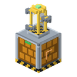

Estación apícola
alaindustrial:apiary_drone_station
Resumen
La Estación apícola es la máquina del apicultor, de dos bloques de alto. Abajo está el cuerpo con el depósito de miel, las ranuras y todas las conexiones; arriba, una «colmena» con cuatro celdas hexagonales en forma de panal, una por cada lado. En cada celda se coloca un dron apícola. Cuando una colmena con un acople anotado en el mapa del colmenar se llena del todo, el dron despega, atraca en el acople, llena su tarro y vuelve: la miel se vierte en el depósito de la estación y de ahí sale por tuberías. Mientras tanto, las abejas se quedan en la colmena y no se enfadan.
Mini-ejemplo. Coloca el cuerpo de la estación y, encima, la colmena superior. Mete dos drones en las celdas y el mapa del colmenar con los acoples anotados, y lleva un cable LV y una tubería a cualquier cara del cuerpo. En cuanto alguna colmena se llene, un dron saldrá de la celda más cercana.
Aspecto: «balcones de panal», las plataformas de los drones dentro del bloque superior en dos pisos, y una columna de cristal con miel; el dron «Abejorro», con un abdomen en forma de tarro y un aguijón.
De qué se compone
| Parte | Bloque | Qué hace |
|---|---|---|
| Cuerpo (inferior) | apiary_drone_station | la máquina: búfer de EU/FE, depósito de miel, ranuras del mapa, de los drones y de los panales; todos los puertos |
| Colmena (superior) | apiary_drone_hive | cuatro celdas de panal de las que despegan los drones; sin puertos |
| Dron apícola | objeto apiary_drone | se coloca en una celda; no se desgasta |
Las dos mitades son dos objetos distintos (decisión del 2026-11-07): la colmena se coloca sobre el cuerpo, el par se monta solo (con un clic de montaje) y la orientación la da el cuerpo. Una colmena sin cuerpo debajo es solo un bloque decorativo.
Desmontaje
| Qué se rompe | Qué ocurre |
|---|---|
| La colmena superior | la estación se queda con el estado «Sin colmena encima»; el depósito, las ranuras y los drones quedan intactos (están en el cuerpo); los drones en vuelo vuelven enseguida a sus ranuras y la miel de sus tarros va al depósito. Vuelve a colocar la colmena y el trabajo continúa |
| El cuerpo inferior | como en las demás máquinas del mod con depósito (centrifugadora de miel, fermentador, polimerizador): el contenido de las ranuras (drones, mapa, panales) cae como objetos, la miel del depósito y la carga de EU/FE se pierden; también la miel de los tarros de los drones en vuelo. La colmena se queda como bloque decorativo |
Solo el tanque de fluidos portátil sabe conservar el fluido en el objeto, y la estación no lo es.
Energía
| Campo | Valor |
|---|---|
| Papel | consumidor |
| Nivel | LV, entrada de hasta 32 EU/FE/t |
| Búfer | 4000 EU/FE |
| Vuelo | 160 EU/FE + 4 EU/FE por cada bloque de distancia hasta el acople (a 15 bloques, 220 EU/FE) |
| En reposo | 0 EU/FE: sin colmenas llenas, la estación duerme |
| Reserva | por cada dron en camino, la estación reserva en el búfer el precio de su vuelo; un vuelo nuevo solo toma el resto libre |
La energía entra por cualquier cara del cuerpo, incluida la de abajo; la colmena superior no acepta cables. Los EU/FE se cobran en el momento del atraque, y solo si la colmena sigue llena; antes del vuelo la estación solo comprueba que el búfer alcance para ese vuelo. Un dron que llega a una colmena ya vaciada vuelve vacío y no cuesta nada.
Ciclo de trabajo
- Cada 20 ticks la estación repasa las entradas del mapa: el acople está en su sitio, la colmena está en un chunk cargado, en la misma dimensión, a no más de 15 bloques, con nivel de miel 5, y no vuela hacia ella otro dron de esta estación.
- Si hay una colmena así y una celda libre con dron, en el depósito hay sitio para 250 mB (contando los tarros de los drones en vuelo), en la ranura de panales hay sitio y hay EU/FE suficientes para el vuelo, el dron despega de la celda libre más cercana a la colmena (en caso de empate: norte, este, sur, oeste).
- El dron rodea árboles, hojas y muros: al despegar, la estación busca una ruta por celdas libres desde la colmena hasta el acople, con la misma búsqueda que los drones constructores del poblado, y el dron la sigue con el morro hacia delante, redondeando las esquinas. Si no hay ruta, mantiene el arco de
clamp(1,5 + 0,2·d; 1,5; 4,5)bloques. El tiempo de vuelo sigue la longitud de la ruta. - En el acople el dron atraca (40 ticks): baja el aguijón en vertical al embudo del acople desde arriba, el tarro del acople baja a escalones de 5 → 0 y el abdomen del dron se llena. Al final del atraque la estación vuelve a comprobar la colmena: si sigue llena, el nivel vuelve a 0 como bajo el humo, se cobran los EU/FE, el abdomen recibe 250 mB de miel y se tira la probabilidad de panal; si no está llena, el dron vuelve vacío y el acople toma enseguida el nivel de la colmena.
- El dron vuelve a su plataforma; el vertido dura 20 ticks: la miel va al depósito (la columna de miel sube) y el panal, a la ranura de panales.
Reiniciar el nivel solo cambia el estado de la colmena: las abejas no salen, no se enfadan y su rutina no cambia (el vainilla, el mismo que al recoger bajo el humo de una hoguera).
Los cuatro drones vuelan a la vez, cada uno a su colmena. En su plataforma el dron mira hacia fuera. En vuelo zumba como una abeja vanilla, y el sonido viaja con él. Clic derecho en la colmena de la estación abre la pantalla de la estación, y el contorno abarca los dos bloques.
Paradas
Ninguna parada pierde miel, panales ni drones.
| Estado | Cuándo | Cómo se reanuda |
|---|---|---|
| Sin colmena encima | se quitó la mitad superior | coloca la colmena sobre el cuerpo |
| Sin mapa del colmenar | la ranura del mapa está vacía | mete el mapa; si se saca el mapa con drones en vuelo, los drones vuelven y no hay vuelos nuevos |
| Sin drones | todas las celdas están vacías | mete un dron |
| Sin energía | el búfer tiene menos que el precio del vuelo más cercano | solo, cuando llega energía |
| Depósito lleno | no hay sitio para 250 mB | solo, cuando las tuberías se llevan la miel |
| Panales llenos | la ranura de panales está llena | solo, cuando las tuberías se llevan los panales |
| Esperando colmenas llenas | ninguna colmena del mapa está llena | solo |
| Trabajando | al menos un dron en vuelo | — |
Dron apícola
| Campo | Valor |
|---|---|
| Objeto | , pila de 1 |
| Desgaste | ninguno: solo se paga con la energía de la estación |
| Velocidad | 11 ticks por bloque de recorrido, no menos de 26 ticks por tramo (como el dron jardinero) |
| Atraque | 40 ticks |
| Colocación | a mano, desde la pantalla; las tolvas y las tuberías no ponen ni sacan drones |
El dron es un dibujo del renderizador de la estación, no una entidad: no se le puede golpear y no carga chunks. El dron jardinero no se puede colocar en una celda.
Fluido
| Campo | Valor |
|---|---|
| Depósito | 10 000 mB, solo miel líquida |
| Acepta desde fuera | nada: la miel solo llega de los drones |
| Entrega | por cualquier cara del cuerpo: a una tubería en modo extracción, a una bomba |
Inventario
| Ranura | Acepta | Cantidad |
|---|---|---|
| Mapa | mapa del colmenar | 1 |
| Celdas 1–4 | dron apícola | 1 cada una |
| Panales | panales (solo salida) | una pila |
Una tubería de objetos saca los panales por cualquier cara del cuerpo.
Interfaz
- Barra de energía y barra del depósito de miel (volumen al pasar el cursor).
- Ranura del mapa, cuatro ranuras de celdas (norte, este, sur, oeste, como en el bloque) y ranura de panales.
- Lista de entradas del mapa: coordenadas, distancia y estado de cada una («espera», «llena», «dron en vuelo», «muy lejos», «sin cargar», «otra dim.», «sin tarro»).
- Línea de estado con el motivo de la inactividad.
Propiedades del bloque
| Campo | Cuerpo | Colmena |
|---|---|---|
| Forma | cubo completo de 16³ | caja no maciza: las plataformas de los drones dentro del bloque en dos pisos; no es oclusor (R-PHY-05,) |
| Dureza | 3.0 | 3.0 |
| Resistencia a explosiones | 6.0 | 6.0 |
| Herramienta | pico | pico |
| Caída | el propio bloque; el contenido de las ranuras cae | el propio bloque |
El pistón no mueve la estación: si no, una mitad se separaría de la otra. El marco de renderizado abarca los cuatro vuelos (radio de 15 bloques).
Recetas
Las tres, en la mesa de trabajo, con piezas LV:
| Objeto | Con qué | La receta se desbloquea con |
|---|---|---|
| Cuerpo de la estación | carcasa de máquina, circuito electrónico, tanque, placa de hierro ×6 | carcasa de máquina o tanque |
| Colmena de la estación | panal ×2, tablones ×4, placa de hierro ×3 | panal |
| Dron apícola | lingote de cobre ×4, lingote de hierro ×2, circuito electrónico, frasco de cristal: como el dron jardinero, pero con un frasco en lugar de la tolva | panal o circuito electrónico |
Progresión
- LV; después del dron jardinero y de la centrifugadora de miel.
- La miel del depósito va a la máquina embotelladora, al polimerizador y a los tanques y tuberías del mod.
- Las habilidades de la estación de trabajo («Ronda ampliada», «Dron veloz») no afectan al dron apícola.
Relacionado
- Acople de colmena: el punto de atraque del dron.
- Mapa del colmenar: qué colmenas atender.
- Estación de dron jardinero: modelo del dron y del vuelo.
- Estación de trabajo: modelo de máquina de dos bloques.
- Miel líquida, centrifugadora de miel.
- Tareas: , épica .
Fabricación
Fabricación con forma
▶
Estación apícola